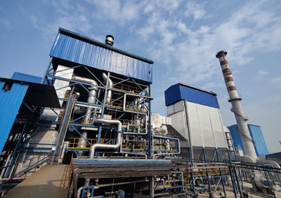

Create demand
Build recurring demand for baled or processed paddy straw around industrial clusters.

Ex-situ / Industrial boilers
Industrial boilers can use baled or prepared paddy straw to generate steam for manufacturing and processing. Cogeneration units can also convert part of this steam into electricity and sell surplus power.
Image: paddy-straw handling at an industrial facility in Khanna. Source: Times of India.Executive summary
A viable model requires three conditions: reliable straw supply, suitable boiler technology and sufficient returns from fuel savings or surplus-power sales. Policy support must address all three together.
Explore the Punjab pathway →Source: supplied Punjab boiler-unit workbook, July 2026. Entries are a planning dataset, not a live statutory registry. The statewide list and nine-district assessment have different coverage.
01 / Why industrial boilers
Many industries need steam for manufacturing and processing. Paddy straw can replace costlier fuels where boiler design, fuel preparation and emission controls are suitable.
Build recurring demand for baled or processed paddy straw around industrial clusters.
Generate steam for industrial operations while reducing dependence on rice husk or fossil fuels.
Eligible cogeneration plants can export surplus electricity through the approved procurement route.

The physical chain
Collection, moisture checks, baling, storage and controlled feeding determine whether the plant receives usable fuel at the modelled cost.
Image: 100% paddy-straw-fired boiler at Shree Ganesh Edibles, Khanna. Source: Isgec.02 / How it works
Select a stage to see the operating requirement that determines performance.
Field to depot
Rake and bale straw during the short harvest window, then protect it from moisture, contamination and fire.
Operating requirement: contracted catchment, safe storage and predictable delivered cost.Fuel preparation
Inspect moisture and contaminants, open or shred bales where required and meter fuel into the boiler.
Operating requirement: uniform fuel quality and reliable handling equipment.Energy conversion
Burn paddy straw in a compatible furnace. Appropriate boiler and pollution-control systems must manage ash, slagging, fouling and emissions.
Operating requirement: suitable equipment, trained operators and preventive maintenance.Industrial use and power
Steam serves the factory’s own operations. Eligible cogeneration units can export surplus electricity to the grid.
Commercial requirement: steady internal steam use and a bankable power-purchase arrangement.03 / Punjab boiler landscape
A nine-district assessment covers 1,503 industrial boiler units and an estimated 21,437 TPH of aggregate capacity. Only 54 units, representing 12.8% of aggregate capacity, were identified as paddy-fuel boilers.
12.8% identified as paddy-fuel capacity
The adoption gap
The supplied statewide list contains 105 paddy-fuel boiler entries across 21 districts. Food processing, general industry, paper, dairy, distilleries and edible-oil units account for many of these entries. The priority is to identify viable clusters rather than pursue every boiler.
Use the list to identify industrial clusters, likely straw catchments and sectors where conversion support could be targeted.
04 / Power purchase route
In May 2026, PSERC allowed PSPCL to procure power from eligible 100% paddy-straw-based intrastate cogeneration plants through a transparent, discount-based bidding process.
PSERC order / Petition 39 of 2026
₹4.50per kWh ceiling tariffThe approved route replaces the proposed first-come, first-served approach with discount-based bids or offers.
What it means: the order creates a route for eligible industries to monetise surplus power, but actual revenue depends on successful bidding, project eligibility, connectivity, generation and the executed PPA.
Read the PSERC order ↗05 / Economic feasibility
The supplied note compares paddy straw with rice husk for two boiler sizes. Switch between the cases to see the additional capital cost, estimated daily savings and simple payback.
Illustrative annual operating-cost saving: ₹5.85 crore at 24-hour operation for 300 days.
Model caveat: The note deliberately uses conservative rice-husk inputs and liberal paddy-straw inputs to estimate the upper end of payback. It is an illustrative simple-payback comparison, not a full investment model.
06 / Binding constraints
A subsidy for equipment alone cannot solve weak fuel logistics, difficult combustion or uncertain revenue.
Deliver sufficient straw at consistent quality and cost.
Operate a straw-compatible boiler reliably and within emission norms.
Earn through fuel-cost savings and, where eligible, surplus-power sales.
Mapped catchments, aggregators, quality standards, depots and multi-year fuel contracts.
Targeted capital support, technical standards, vendor empanelment and O&M assistance.
Cluster-level demand aggregation, transparent PPA access and performance-linked incentives.
Stable fuel supply at a known delivered cost.
Reliable steam generation with controlled downtime and emissions.
Bankable savings and revenue that justify conversion.
07 / Punjab pathway
Five coordinated actions can turn isolated boiler conversions into predictable demand for paddy straw.
Overlay boiler capacity, sector, operating days, fuel use and straw catchments.
A ranked list of suitable units and clusters.
Support goes where sustained straw demand is most likely.
Link capital support to verified commissioning, straw use and operating performance.
Defined eligibility, milestones and verification.
Public spending converts into operating capacity.
Contract aggregators, standardise quality and develop safe shared storage.
Known volume, price, catchment and responsibility.
Plants receive usable fuel throughout the year.
Empanel suitable vendors and provide commissioning and operator support.
Fit-for-purpose designs and maintenance pathways.
Lower downtime, fouling and performance risk.
Help eligible plants prepare bids, secure connectivity and execute PPAs.
Complete applications and grid-evacuation plans.
Surplus power becomes a dependable secondary revenue stream.
08 / GDi’s work
GDi’s work connects incentive design with the existing boiler base, plant economics and the surplus-power procurement route.
Analyse the boiler base, current paddy-straw use, priority industrial clusters and potential residue demand.
Compare capital requirements, fuel costs, operating savings and payback across boiler sizes.
Develop an incentive framework that can accelerate viable boiler conversions across Punjab.
Support the PSPCL procurement route for surplus power from eligible paddy-straw cogeneration units.
Return to the portfolio